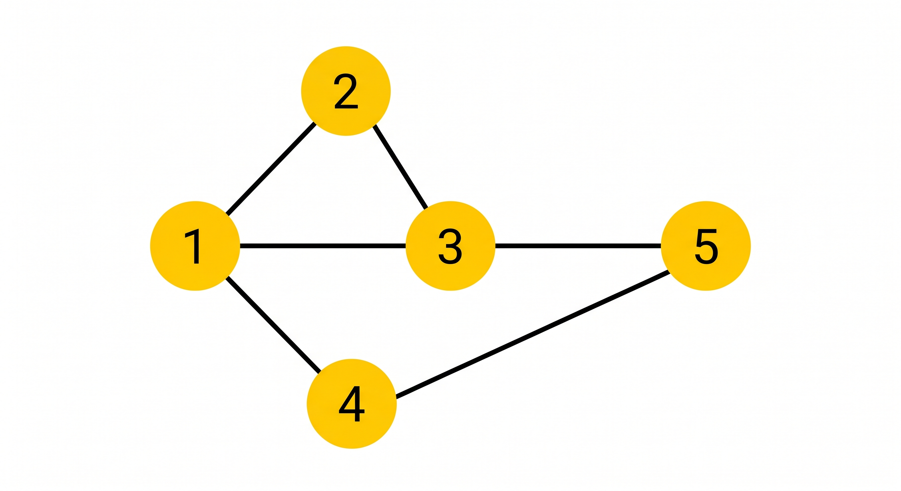
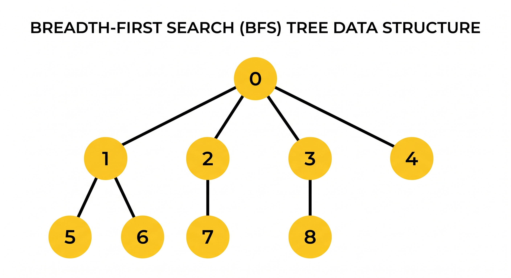

A Graph is a fundamental data structure in computer science consisting of a set of vertices (nodes) and a set of edges (connections between the nodes).
Graphs are a pervasive data structure, and algorithms for working with them are fundamental to the field. Hundreds of interesting computational problems are defined in terms of graphs.

Figure 1: A simple graph representation.

Figure 2: Examples of basic graph classifications.
A graph is formally defined as G = (V, E) where V is the set of vertices and E is the set of edges. Edges in a directed graph are ordered pairs.

Figure 3: Node degrees in a directed graph.

Figure 4: A Tree is fully connected; a Forest is a collection of disconnected trees.
There are two standard ways to represent a graph G=(V,E) in computer memory. Both are applicable to directed and undirected graphs.
Why do we search? To find paths and to determine connectivity.
Given a graph G=(V,E) and a source vertex s, BFS systematically explores the edges of G to "discover" every vertex that is reachable from s.

Figure 5: BFS explores the graph level-by-level, utilizing a Queue.
Running Time: O(V + E)
DFS searches the graph deeper whenever possible. Edges are explored out of the most recently discovered vertex v that still has unexplored edges. When all of v's edges have been explored, the search "backtracks".
Running Time: Θ(V + E)